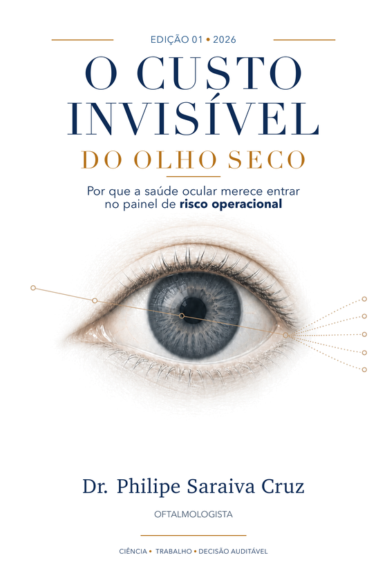
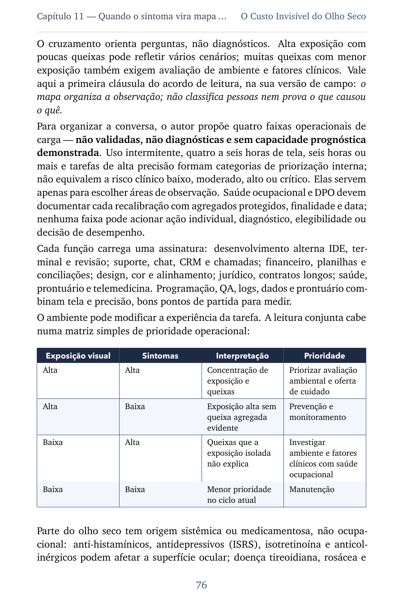
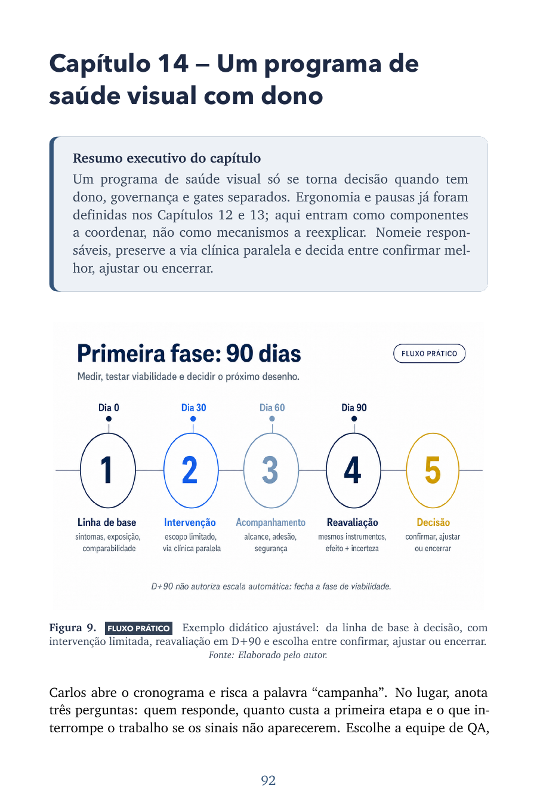
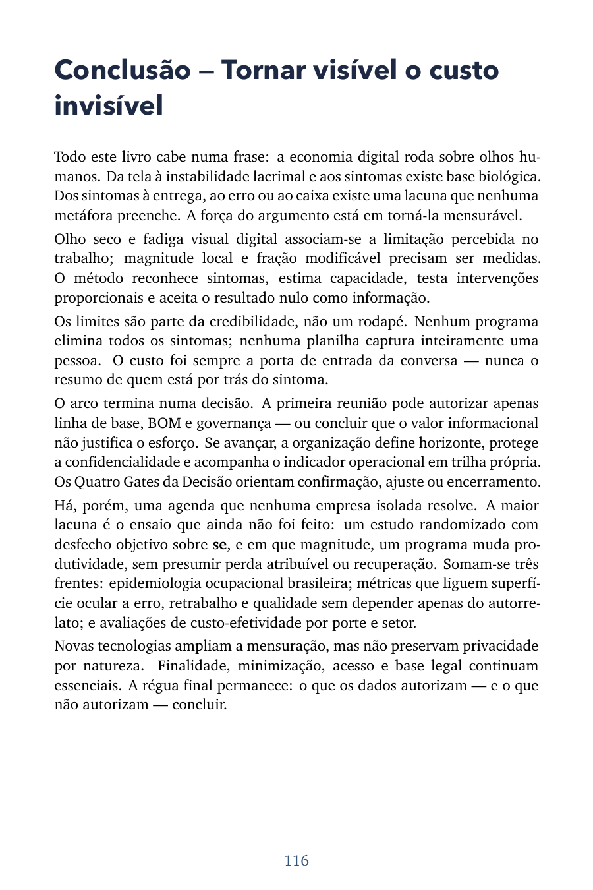

Para quem precisa entender
Fisiologia, sintomas, limitações e a fronteira entre plausibilidade e prova.
Abrir a amostraMedicina · gestão · evidência
Um livro para lideranças que precisam investigar sintomas visuais no trabalho — separando o que a ciência sustenta, o que a organização ainda precisa medir e o que não pode ser prometido.
Pré-lançamento. Nenhuma venda ou pré-venda ocorre nesta página.

O problema que não aparece
Uma pessoa pode enxergar 20/20 e ainda relatar ardor, oscilação visual, peso nos olhos ou dificuldade para sustentar uma jornada de tela. O relato importa — mas não autoriza um salto até diagnóstico, causa ou perda financeira.
Avançar um elo por vez
A evidência de um elo não prova o seguinte. O livro transforma essa prudência em um percurso operacional que pode ser testado, auditado e interrompido.
Tela, ambiente, jornada e tarefa.
Filme lacrimal, piscar e demanda visual.
Relato não é diagnóstico.
Capacidade percebida em instrumento definido.
Indicador objetivo, denominador e janela.
Somente benefício incremental atribuível.
“A evidência autoriza avançar
um elo por vez.”
O modelo central do livro
Um gate favorável não compensa outro frágil. Se a implementação falha, o dado clínico não salva o piloto. Se o benefício não é atribuível, a planilha não cria retorno.
A intervenção aconteceu como planejado, com adesão, alcance e qualidade verificáveis?
Ciência que chega à mesa de decisão
É um livro sobre construir uma régua capaz de refutar a hipótese, proteger pessoas e decidir melhor — inclusive quando o resultado é nulo.



Fisiologia, sintomas, limitações e a fronteira entre plausibilidade e prova.
Abrir a amostraPapéis, LGPD, instrumentos, via clínica, critérios de parada e decisão D+90.
Avaliar prontidãoCapacidade equivalente, custo cotado e limiar — sem converter cenário em caixa.
Explorar o cenárioA bibliografia completa da obra, com referências citadas, leituras e fontes consultadas.
Abrir referências completasUma conta que mostra as premissas
Este instrumento não calcula economia, ROI ou payback. Ele organiza capacidade equivalente e, quando há custo cotado, mostra o limiar que um benefício incremental atribuível teria de superar.
Indisponível antes de benefício incremental, atribuível e auditável.
Zero significa informação indisponível — não ausência de custo, sintoma ou efeito.
Capacidade equivalente = N × C × P × L · Limiar = K ÷ capacidade equivalente. Nenhuma fórmula prova benefício ou atribuição.
Três rotas, sem mistura de papéis
Estado editorial
Os valores abaixo refletem as ofertas atualmente observadas nos canais de referência. Esta página não processa pagamento nem realiza pré-venda; disponibilidade, versão e entrega continuam dependentes da confirmação de cada canal.
Preços observados nos canais de referência; a landing continua sem checkout, venda ou pré-venda.
Antes de avançar
Não. É material educativo e executivo. Triagem organizacional não substitui avaliação médica individual, e qualquer cuidado clínico pertence à relação assistencial.
Não. Ele separa produtividade percebida, capacidade equivalente, benefício incremental atribuível e ROI retrospectivo. Resultado nulo permanece uma conclusão válida.
Não. Livro e kit foram desenhados para uso independente. Há uma rota organizacional opcional, separada do atendimento clínico e sem garantia de adequação.
Não. Ela revisa governança, papéis, dados disponíveis, licenças, capacidade e critérios de parada. Respostas individuais não são transmitidas a um provedor externo.
O Custo Invisível do Olho Seco
Material educativo. Não substitui avaliação médica individual e não promete produtividade, economia, causalidade ou retorno.